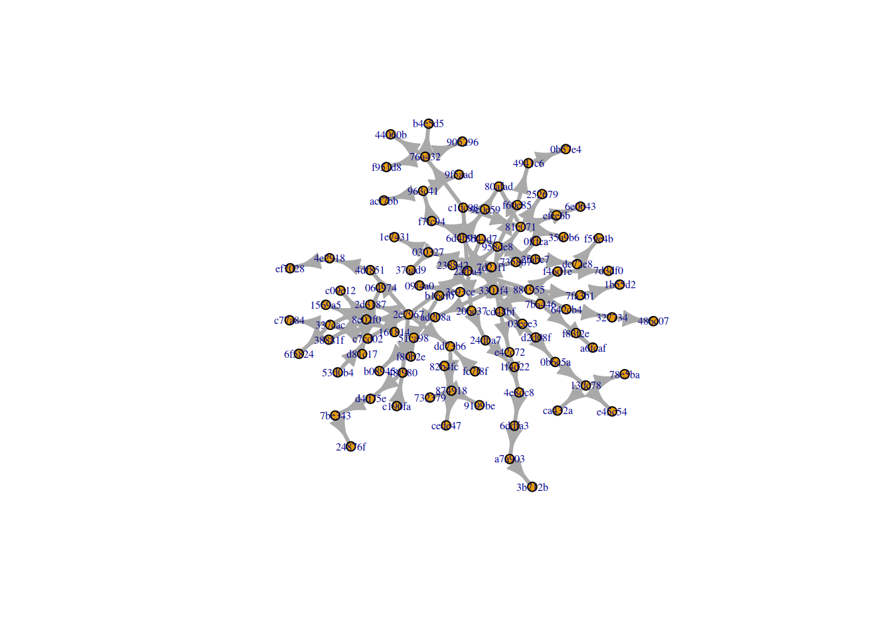
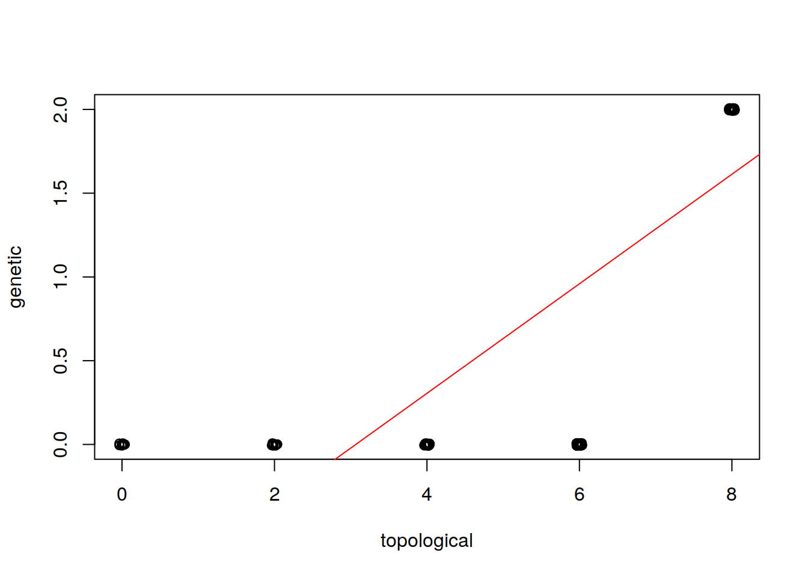

Overview of the rpathsonpaths package
Martin Hinsch
2018-01-29
rpathsonpaths provides functions to simulate the spread of biological organisms on a substrate that is itself moving through a network structure (e.g. pathogens in a food distribution network or infections in migrating animals). This vignette provides an overview of current features. It largely reproduces the content of REAME.md.
Installing the package
rpathsonpaths is currently only available on github.
Prerequisites:
- Rcpp (>= 0.12.9)
Some of the functionality will also require the igraph package.
devtools::install_github("reconhub/incidence")Note that this requires the package devtools to be installed.
What does it do?
rpathsonpaths provides functions to simulate the spread of a population in a substrate that itself is transported across a directed graph. The paradigmatic example is the spread of pathogens in food transport networks, but other instances might include for examples infections in migrating animals.
The most important functions include:
popsnetwork: create a network object from an edgelist (describing the transport graph) and a list of external sources.set_allele_freq: set the population composition in source nodes.popgen_dirichlet: simulate spread of genetic material on the network using a Dirichlet distribution to approximate genetic drift.draw_isolates: draw a number of random individuals from a set of nodes using the simulated allele frequencies.plot: plot a popsnetwork object (currently uses igraph, but more backends are planned).
A quick overview
The following worked example provides a brief overview of the package’s functionalities.
Preparing the network
First, we prepare an edge list describing the network, and the initial state of the source nodes:
library(rpathsonpaths)
# from nodes
inp <- c(0L, 0L, 1L, 2L, 3L, 1L, 5L)
# to nodes
outp <- c(1L, 2L, 3L, 3L, 4L, 4L, 2L)
# rate of transport, this is optional
rates <- c(1, 1.5, 0.5, 0.1, 1, 0.1, 0.5)
edgelist <- data.frame(inp, outp, rates)We have to provide some external input into the network (otherwise the simulation will be quite boring). In this case we only give the IDs of the input nodes and the (absolute) amount of infected material which means 1 will be assumed for net input rates (infected + uninfected). This is fine since we intend to run the Dirichlet model so absolute numbers are irrelevant. If we wanted to run the mechanistic model we would need both sets of numbers.
# external input (node IDS, infected input)
ext <- data.frame(c(0L, 5L), c(0.5, 0.5))Now we can create a popsnetwork object:
# create network using infection rate (within nodes) of 0.1
# this already calculates the amount of infected/unifected for
# all nodes
netraw <- popsnetwork(edgelist, ext, 0.1)
netraw
#> Nodes:
#>
#> id infected input alleles...
#> 0 0.55 1
#> 1 0.595 1
#> 2 0.595 2
#> 3 0.6355 0.6
#> 4 0.668636 1.1
#> 5 0.55 1
#>
#> Links:
#>
#> from to rate infected
#> 0 1 1 0.55
#> 0 2 1.5 0.55
#> 1 3 0.5 0.595
#> 2 3 0.1 0.595
#> 3 4 1 0.6355
#> 1 4 0.1 0.595
#> 5 2 0.5 0.55
plot(netraw)
#> Loading required namespace: igraph
We have now set up the network topology and determined the amount of infected and uninfected material in each node. In the next step we have to set allele frequencies at the input nodes. Then we can run the simulation to obtain genetic composisition at the leaf nodes.
Injecting initial populations and simulating spread
We set up the initial genetic composition of the input nodes. In this case we assume all root nodes have external input.
# allele frequencies, rows=nodes, columns=alleles
freqs <- matrix(c(0.1, 0.4, 0.3, 0.1, 0.2, 0.2, 0.4, 0.3), ncol=4, nrow=2)
netini <- set_allele_freqs(netraw, list(c(0L, 5L), freqs))
netini
#> Nodes:
#>
#> id infected input alleles...
#> 0 0.55 1 0.1 0.3 0.2 0.4
#> 1 0.595 1 0 0 0 0
#> 2 0.595 2 0 0 0 0
#> 3 0.6355 0.6 0 0 0 0
#> 4 0.668636 1.1 0 0 0 0
#> 5 0.55 1 0.4 0.1 0.2 0.3
#>
#> Links:
#>
#> from to rate infected
#> 0 1 1 0.55
#> 0 2 1.5 0.55
#> 1 3 0.5 0.595
#> 2 3 0.1 0.595
#> 3 4 1 0.6355
#> 1 4 0.1 0.595
#> 5 2 0.5 0.55Now we are ready to simulate spread of genetic material in the network. Note that every call to popgen_dirichlet will generally produce a different allele frequency distribution.
# simulate with a theta of 1.7
netdir1 <- popgen_dirichlet(netini, 1.7)
netdir1
#> Nodes:
#>
#> id infected input alleles...
#> 0 0.55 1 0.1 0.3 0.2 0.4
#> 1 0.595 1 0.00267472 0.656302 0.3089 0.0321235
#> 2 0.595 2 0.101425 0.178272 0.121691 0.598612
#> 3 0.6355 0.6 0.000133839 0.602849 0.267288 0.129729
#> 4 0.668636 1.1 2.16308e-167 0.663919 0.303289 0.0327918
#> 5 0.55 1 0.4 0.1 0.2 0.3
#>
#> Links:
#>
#> from to rate infected
#> 0 1 1 0.55
#> 0 2 1.5 0.55
#> 1 3 0.5 0.595
#> 2 3 0.1 0.595
#> 3 4 1 0.6355
#> 1 4 0.1 0.595
#> 5 2 0.5 0.55
netdir2 <- popgen_dirichlet(netini, 1.7)
netdir2
#> Nodes:
#>
#> id infected input alleles...
#> 0 0.55 1 0.1 0.3 0.2 0.4
#> 1 0.595 1 7.3884e-10 0.0333235 0.0617023 0.904974
#> 2 0.595 2 0.0693273 0.0437113 0.834116 0.0528455
#> 3 0.6355 0.6 4.48017e-08 0.071681 0.166579 0.76174
#> 4 0.668636 1.1 0 0.042754 0.267485 0.689761
#> 5 0.55 1 0.4 0.1 0.2 0.3
#>
#> Links:
#>
#> from to rate infected
#> 0 1 1 0.55
#> 0 2 1.5 0.55
#> 1 3 0.5 0.595
#> 2 3 0.1 0.595
#> 3 4 1 0.6355
#> 1 4 0.1 0.595
#> 5 2 0.5 0.55Drawing samples
Finally we can draw samples from our simulated population.
# 10 samples from nodes 2 and 4
samplconf <- data.frame(c(2L, 4L), c(10L, 10L))
draw_isolates(netdir1, samplconf)
#> node allele_0 allele_1 allele_2 allele_3
#> 1 2 1 1 1 7
#> 2 4 0 7 3 0
draw_isolates(netdir2, samplconf)
#> node allele_0 allele_1 allele_2 allele_3
#> 1 2 1 0 9 0
#> 2 4 0 0 3 7An example using real data
Obtain and clean up data
Let’s load the data:
library(outbreaks)
data(s_enteritidis_pt59)
# outbreaks stores node lists as string vectors...
raw_graph = s_enteritidis_pt59$graph
# ...but putting them into a dataframe will convert them to factors
sent_graph = data.frame(from=raw_graph[[1]], to=raw_graph[[2]])Just in case we do some sanity checks.
library(rpathsonpaths)
# check for separate subnetworks
colour_network(sent_graph)
#> [1] 3 3 3 3 3 3 3 3 3 3 3 3 3 3 3 3 3 3 3 3 3 3 3 3 3 3 3 3 3 3 3 3 3 3 3
#> [36] 3 3 3 3 3 3 3 3 3 3 3 3 3 3 3 3 3 3 3 3 3 3 3 3 3 3 3 3 3 3 3 3 3 3 3
#> [71] 3 3 3 3 3 3 3 3 3 3 3 3 3 3 3 3 3 3 3 3 3 3 3 3 3 3 3 3 3 3 3 3 3
# check for cycles
cycles(sent_graph)
#> [1] TRUEOk, we do have one contiguous network. Unfortunately, however, there’s a cycle. This will make rpathsonpaths very unhappy so we have to get rid of it.
Create network
Ok, this is solved. Now let’s see how many root nodes we have in the network.
sg_sources <- sources(sent_graph2)
sg_sources
#> [1] 2e7967 fc7f8f 53d0b4 3301f4 c190fa d2d08f 238842
#> 98 Levels: 2e7967 cd48bf dd73b6 7ba446 642cb4 c7cd02 5b44d7 ... 486c07In order to be able to construct a popsnetwork object we have to provide at least the rate of input of infected material for each source.
# this is the lazy way
sg_ext <- data.frame(sg_sources, rep(0.5, length(sg_sources)))
sg_ext
#> sg_sources rep.0.5..length.sg_sources..
#> 1 2e7967 0.5
#> 2 fc7f8f 0.5
#> 3 53d0b4 0.5
#> 4 3301f4 0.5
#> 5 c190fa 0.5
#> 6 d2d08f 0.5
#> 7 238842 0.5Now we can create the network.
# some mild infection within nodes
sg_net <- popsnetwork(sent_graph2, sg_ext, 0.1)
plot(sg_net)
Run simulation
The only thing left to do in order to run the simulation is to provide initial allele frequency distributions for the source nodes.
# it's just an example so let's make things easy
sg_freqs <- matrix(rep(c(0.25, 0.25, 0.5), each=7), nrow=7)
# we can provide allele frequencies when calling the simulation
sg_net_dir <- popgen_dirichlet(sg_net, 1.3, list(sg_sources, sg_freqs))
sg_net_dir
#> Nodes:
#>
#> id infected input alleles...
#> 2e7967 0.55 1 0.25 0.25 0.5
#> cd48bf 0.595 1 0.0838134 0.0456621 0.870525
#> dd73b6 0.595 2 0.18 0.44891 0.37109
#> 7ba446 0.595 1 5.29218e-05 0.708952 0.290995
#> 642cb4 0.6355 1 0.141093 0.850673 0.00823423
#> c7cd02 0.595 2 0.199837 0.148004 0.652159
#> 5b44d7 0.64765 1 2.33382e-22 0.0425481 0.957452
#> 2afba4 0.6085 3 0.0163459 0.069283 0.914371
#> fc7f8f 0.55 1 0.25 0.25 0.5
#> 963c41 0.714597 1 0 1.07055e-08 1
#> f60e85 0.659193 1 0.148956 0.0175484 0.833496
#> 4941c6 0.693273 1 0.0195274 4.84137e-07 0.980472
#> 53d0b4 0.55 1 0.25 0.25 0.5
#> 13dc78 0.67195 1 0.00251391 0 0.997486
#> 9c0e59 0.6355 1 0 0.0257038 0.974296
#> 6ddfa3 0.704755 1 0 5.85328e-14 1
#> 3301f4 0.55 1 0.25 0.25 0.5
#> 874918 0.6355 1 0.636749 0.235408 0.127843
#> f46d1e 0.6355 1 0.243431 0.55348 0.20309
#> 0b6e5a 0.6355 1 0.278297 9.56559e-62 0.721703
#> c190fa 0.55 1 0.25 0.25 0.5
#> 337cac 0.6355 2 0.0742499 0.0107447 0.915005
#> 03eee3 0.595 1 0.559247 0.00152018 0.439233
#> c1dc98 0.64765 1 3.89684e-33 0.00075953 0.99924
#> a7a903 0.734279 1 0 0 1
#> d2d08f 0.55 1 0.25 0.25 0.5
#> 030327 0.64765 1 0.000699731 0.072745 0.926555
#> 6d4b91 0.595 1 0.000368935 0.3383 0.661331
#> 76a432 0.682885 1 0 0 1
#> 7fa3b1 0.6355 1 0.0283226 0.0185481 0.953129
#> f83f2e 0.6355 1 0 0.903413 0.096587
#> 881955 0.595 1 0.181078 0.261685 0.557237
#> e42c72 0.6355 1 0.000257806 0.0866384 0.913104
#> 4df851 0.595 1 0.206106 0.027365 0.766529
#> d4d75e 0.6355 1 0.0023231 0.279253 0.718424
#> 7be343 0.67195 1 3.38294e-190 0.62931 0.37069
#> 735807 0.64765 1 0.00135838 0.356618 0.642024
#> 238842 0.55 1 0.25 0.25 0.5
#> 3e93ce 0.595 1 0.00134344 0.123606 0.87505
#> f7fc94 0.682885 1 0 0.0320195 0.967981
#> 8e02f0 0.6355 1 0.917731 2.27701e-05 0.0822467
#> b16cf0 0.64765 1 6.14165e-16 2.69081e-08 1
#> 51ca98 0.682885 1 0 0 1
#> 81e071 0.665268 2 0.236626 0.0396181 0.723756
#> dc72e8 0.714597 1 0 3.16279e-260 1
#> 4e2918 0.6355 1 0.0555496 0.0666501 0.8778
#> 2fabc7 0.682885 1 0 0.00101127 0.998989
#> ad208a 0.595 1 0.153464 0.0588753 0.787661
#> 48f980 0.595 2 0.18008 0.307052 0.512868
#> 24dba7 0.682885 1 0 0.235104 0.764896
#> 327734 0.67195 1 5.59984e-05 0.999944 2.06873e-38
#> 4e8dc8 0.67195 1 3.1254e-62 0.0280697 0.97193
#> 206e37 0.64765 1 4.18517e-10 0.504279 0.495721
#> 958de8 0.621325 2 0.48144 0.0950789 0.423481
#> 2d3187 0.595 1 0.00155841 0.26313 0.735311
#> 7d21f1 0.6085 3 0.0466761 0.401008 0.552315
#> acf7bb 0.743137 1 0 0 1
#> 9f5aad 0.743137 1 0 0 1
#> 0b57e4 0.723946 1 6.00149e-76 0 1
#> 78e5ba 0.704755 1 1.52007e-82 0 1
#> ca432a 0.704755 1 1.13139e-63 0 1
#> e45c54 0.704755 1 6.42982e-07 0 0.999999
#> 80afad 0.685345 2 0.0241042 1.37133e-18 0.975896
#> cede47 0.67195 1 0.99103 3.67398e-05 0.00893356
#> 82b4fc 0.67195 1 0.0211203 0.00224217 0.976638
#> 732379 0.67195 1 0.796497 0.133403 0.0701002
#> 9199be 0.67195 1 0.968146 8.93352e-08 0.0318538
#> 7d3df0 0.67195 1 0.684266 0.315018 0.000716694
#> c77a84 0.67195 1 0.00358136 8.87501e-14 0.996419
#> 6f5824 0.67195 1 0.00106071 6.44736e-27 0.998939
#> 3b712b 0.760852 1 0 0 1
#> 1e7431 0.682885 1 1.73564e-214 0.169311 0.830689
#> 37aad9 0.682885 1 1.69373e-53 1.25576e-06 0.999999
#> 44060b 0.714597 1 0 0 1
#> 905296 0.714597 1 0 0 1
#> f951d8 0.714597 1 0 0 1
#> b4e5d5 0.714597 1 0 0 1
#> 1b55d2 0.67195 1 0.000699609 3.2966e-14 0.9993
#> a6fcaf 0.67195 1 0 0.744763 0.255237
#> 24876f 0.704755 1 0 0.913799 0.0862009
#> 0fffca 0.682885 1 1.11697e-79 0.142732 0.857268
#> 09f4a0 0.6355 1 7.78071e-141 0.432329 0.567671
#> 38881f 0.67195 1 0.999744 0 0.000256039
#> d81c17 0.67195 1 0.691264 0 0.308736
#> 1569a5 0.67195 1 1 0 1.05772e-20
#> 064974 0.67195 1 0.99752 0 0.00247978
#> 161814 0.67195 1 1 0 2.89694e-18
#> c09e12 0.67195 1 0.965847 0 0.0341532
#> b08945 0.714597 1 0 0 1
#> f80b2e 0.714597 1 0 0 1
#> 35a9b6 0.698741 1 0.053697 1.33076e-06 0.946302
#> 6e0643 0.698741 1 0.00808569 8.77336e-10 0.991914
#> efee6b 0.698741 1 0.000786487 6.68984e-14 0.999214
#> 252679 0.698741 1 0.195644 4.4502e-17 0.804356
#> f59e4b 0.743137 1 0 0 1
#> ef7028 0.67195 1 0.0175979 0.108377 0.874025
#> 1f4d22 0.714597 1 0 0.0187932 0.981207
#> 486c07 0.704755 1 0 1 0
#>
#> Links:
#>
#> from to rate infected
#> 2e7967 dd73b6 1 0.55
#> 2e7967 c7cd02 1 0.55
#> 2e7967 2afba4 1 0.55
#> 2e7967 4df851 1 0.55
#> 2e7967 48f980 1 0.55
#> 2e7967 2d3187 1 0.55
#> cd48bf e42c72 1 0.595
#> cd48bf 7d21f1 1 0.595
#> dd73b6 874918 1 0.595
#> 7ba446 f83f2e 1 0.595
#> 642cb4 327734 1 0.6355
#> c7cd02 337cac 1 0.595
#> 5b44d7 f7fc94 1 0.64765
#> 5b44d7 2fabc7 1 0.64765
#> 2afba4 5b44d7 1 0.6085
#> 2afba4 c1dc98 1 0.6085
#> 2afba4 b16cf0 1 0.6085
#> 2afba4 206e37 1 0.6085
#> 2afba4 958de8 1 0.6085
#> fc7f8f dd73b6 1 0.55
#> 963c41 acf7bb 1 0.714597
#> 963c41 9f5aad 1 0.714597
#> f60e85 4941c6 1 0.659193
#> 4941c6 0b57e4 1 0.693273
#> 53d0b4 c7cd02 1 0.55
#> 13dc78 78e5ba 1 0.67195
#> 13dc78 ca432a 1 0.67195
#> 13dc78 e45c54 1 0.67195
#> 9c0e59 80afad 1 0.6355
#> 6ddfa3 a7a903 1 0.704755
#> 3301f4 7ba446 1 0.55
#> 3301f4 03eee3 1 0.55
#> 3301f4 6d4b91 1 0.55
#> 3301f4 881955 1 0.55
#> 3301f4 3e93ce 1 0.55
#> 3301f4 ad208a 1 0.55
#> 3301f4 958de8 1 0.55
#> 3301f4 7d21f1 1 0.55
#> 874918 cede47 1 0.6355
#> 874918 82b4fc 1 0.6355
#> 874918 732379 1 0.6355
#> 874918 9199be 1 0.6355
#> f46d1e 7d3df0 1 0.6355
#> 0b6e5a 13dc78 1 0.6355
#> c190fa 48f980 1 0.55
#> 337cac c77a84 1 0.6355
#> 337cac 6f5824 1 0.6355
#> 03eee3 0b6e5a 1 0.595
#> c1dc98 76a432 1 0.64765
#> c1dc98 81e071 1 0.64765
#> a7a903 3b712b 1 0.734279
#> d2d08f cd48bf 1 0.55
#> 030327 1e7431 1 0.64765
#> 030327 37aad9 1 0.64765
#> 6d4b91 9c0e59 1 0.595
#> 76a432 44060b 1 0.682885
#> 76a432 905296 1 0.682885
#> 76a432 f951d8 1 0.682885
#> 76a432 b4e5d5 1 0.682885
#> 7fa3b1 1b55d2 1 0.6355
#> f83f2e a6fcaf 1 0.6355
#> 881955 642cb4 1 0.595
#> 881955 2afba4 1 0.595
#> 881955 f46d1e 1 0.595
#> 881955 7fa3b1 1 0.595
#> e42c72 4e8dc8 1 0.6355
#> 4df851 4e2918 1 0.595
#> d4d75e 7be343 1 0.6355
#> 7be343 24876f 1 0.67195
#> 735807 0fffca 1 0.64765
#> 238842 2afba4 1 0.55
#> 238842 7d21f1 1 0.55
#> 3e93ce 09f4a0 1 0.595
#> f7fc94 963c41 1 0.682885
#> 8e02f0 38881f 1 0.6355
#> 8e02f0 d81c17 1 0.6355
#> 8e02f0 1569a5 1 0.6355
#> 8e02f0 064974 1 0.6355
#> 8e02f0 161814 1 0.6355
#> 8e02f0 c09e12 1 0.6355
#> b16cf0 51ca98 1 0.64765
#> 51ca98 b08945 1 0.682885
#> 51ca98 f80b2e 1 0.682885
#> 81e071 80afad 1 0.665268
#> 81e071 35a9b6 1 0.665268
#> 81e071 6e0643 1 0.665268
#> 81e071 efee6b 1 0.665268
#> 81e071 252679 1 0.665268
#> dc72e8 f59e4b 1 0.714597
#> 4e2918 ef7028 1 0.6355
#> 2fabc7 dc72e8 1 0.682885
#> ad208a 8e02f0 1 0.595
#> 48f980 d4d75e 1 0.595
#> 24dba7 1f4d22 1 0.682885
#> 327734 486c07 1 0.67195
#> 4e8dc8 6ddfa3 1 0.67195
#> 206e37 24dba7 1 0.64765
#> 958de8 f60e85 1 0.621325
#> 2d3187 337cac 1 0.595
#> 7d21f1 030327 1 0.6085
#> 7d21f1 735807 1 0.6085
#> 7d21f1 81e071 1 0.6085Now we are ready to draw lots of isolates.
# leaf nodes
sg_sinks <- sinks(sent_graph2)
# 20 samples from each sink node
draw_isolates(sg_net_dir, data.frame(sg_sinks, rep(20, length(sg_sinks))))
#> node allele_0 allele_1 allele_2
#> 1 acf7bb 0 0 20
#> 2 9f5aad 0 0 20
#> 3 0b57e4 0 0 20
#> 4 78e5ba 0 0 20
#> 5 ca432a 0 0 20
#> 6 e45c54 0 0 20
#> 7 80afad 0 0 20
#> 8 cede47 20 0 0
#> 9 82b4fc 0 1 19
#> 10 732379 16 3 1
#> 11 9199be 19 0 1
#> 12 7d3df0 15 5 0
#> 13 c77a84 0 0 20
#> 14 6f5824 0 0 20
#> 15 3b712b 0 0 20
#> 16 1e7431 0 3 17
#> 17 37aad9 0 0 20
#> 18 44060b 0 0 20
#> 19 905296 0 0 20
#> 20 f951d8 0 0 20
#> 21 b4e5d5 0 0 20
#> 22 1b55d2 0 0 20
#> 23 a6fcaf 0 14 6
#> 24 24876f 0 18 2
#> 25 0fffca 0 2 18
#> 26 09f4a0 0 14 6
#> 27 38881f 20 0 0
#> 28 d81c17 17 0 3
#> 29 1569a5 20 0 0
#> 30 064974 20 0 0
#> 31 161814 20 0 0
#> 32 c09e12 20 0 0
#> 33 b08945 0 0 20
#> 34 f80b2e 0 0 20
#> 35 35a9b6 2 0 18
#> 36 6e0643 0 0 20
#> 37 efee6b 0 0 20
#> 38 252679 5 0 15
#> 39 f59e4b 0 0 20
#> 40 ef7028 0 2 18
#> 41 1f4d22 0 0 20
#> 42 486c07 0 20 0Multiple runs and analysis
A single simulation is not particularly interesting. In this section we will therefore run a whole set of simulations and do some basic analysis on the results.
As a simple example we will try to find out whether topological distance between nodes on the network results in a corresponding genetic distance when looking at the genetic composition of the nodes’ pathogen population.
For the sake of simplicity we will use a simple binary tree for this example. Note that for maximum flexibility perfect_binary creates an edge list, not a popsnetwork object.
# generate network
tree <- perfect_binary(4L)We measure genetic distance between two samples as the Hamming distance of their genomes and the genetic distance between two nodes as the genetic distance of two random isolates drawn from these nodes.
By default rpathsonpaths only simulates single loci. This would result in all genetic distance measurements to be either 0 or 1, which is not very useful for statistical analysis. It is quite simple, however, to emulate multiple loci - simply run the same scenario multiple times and collate the results (note that this assumes that there is no linkage disequilibrium).
We first have to generate initial allele frequencies for each locus.
# generate a list of random allele frequencies
# these are the initial allele frequency distributions at 10 "loci"
all_freqs <- replicate(10, list(0, gtools::rdirichlet(1, c(1, 1))), simplify=FALSE)run_popsnet is a convenience frontend for popsnetwork, set_allele_freqs and the popgen_* simulator functions. It makes it straightforward to run a large set of simulations on the same network topology. Note that, since the function calls popsnetwork’s contructor itself, the network has to be provided in edgelist format. The result of a call to run_popsnet is a simple list containing the raw network object (as produced by the contructor) and a vector of network objects containing the simulation data.
# now we can run the simulation
# since all_freqs is a list the simulation will be run n (in this case 1) times
# per element
results <- run_popsnet(tree, ini_input=1, ini_infd=0.5,
ini_freqs=all_freqs, n=1L, theta=0.1,
# we use the Dirichlet model
spread_model="fluid", drift_model="dirichlet")Now we have to do something with the results. We will first obtain topological distances using rpathsonpaths’ path_distances function. Since in our simple scenario infection cases equal leaf nodes of the network we keep only the distances between all leaf nodes.
# $raw contains the pre-simulation net
raw <- results$raw
# we need those since we are only interested in leaf nodes
snks <- as.character(sinks(edge_list(raw)))
# get topological distances of all pairs of leaf nodes
path_dists <- path_distances(raw)[snks, snks]Next we determine genetic distances. The builtin function distances_sample does most of the heavy lifting for us. It draws a random isolate from each node and calculates Hamming distance for each pair of nodes. As before we throw away everything but the leaf nodes. This will give us a matrix of 1s and 0s for each of the simulations, which - as we said before - correspond to one locus each. We simply sum all results to obtain genetic distance over the whole genome.
# the actual results
res <- results$result
# this runs distances_sample on each of the networks in the results and sums
# up the results
gene_dists <- Reduce('+', lapply(res, function(x) distances_sample(x)[snks, snks]))Now we can plot genetic versus topological distance and the resulting correlation. As we can see there is a clear correlation between topological and genetic distance.
plot(x=jitter(as.vector(path_dists), 0.1), y=jitter(as.vector(gene_dists), 0.02), xlab="topological", ylab="genetic")
abline(lm(as.vector(gene_dists)~as.vector(path_dists)), col="red")